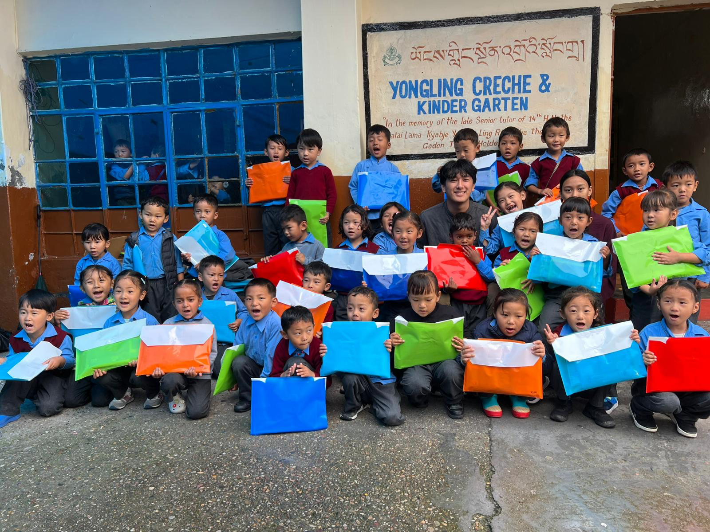
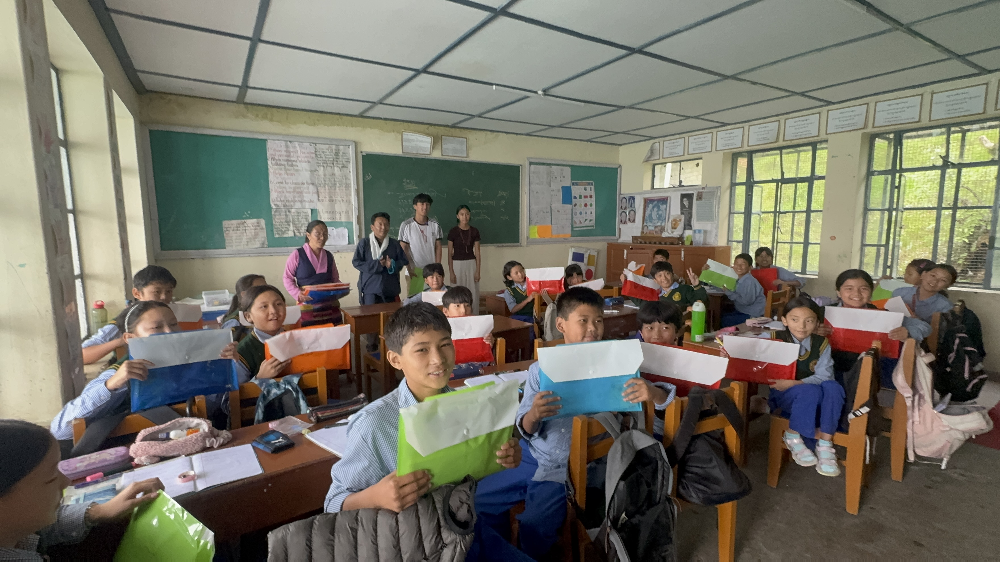
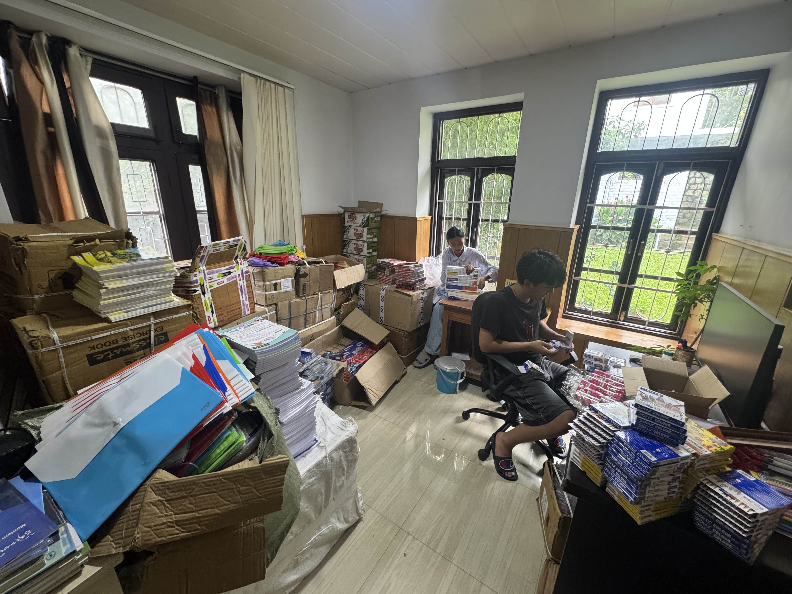

About
Tibetan Youth Initiative (TYI) is a student-led nonprofit organization supporting Tibetan youth through education programs, cultural preservation, and evidence-based policy advocacy. Founded by Nyida Gyal, TYI operates in partnership with schools in Dharamsala, India, and submits research to international institutions including the United Nations and the European Commission.
Our work combines direct programmatic support—school supplies, classroom resources, and community engagement—with substantive policy briefs that advance youth rights, education equity, and minority protections in global forums.
Programs & Research
Our work spans direct education support and international policy advocacy. Current program areas include:
- Educational Access — Distribution of learning materials to partner schools in Dharamsala (1,500+ students supported)
- Cultural Preservation — Supporting Tibetan language instruction and heritage programming in exile communities
- Human Rights & Minority Protections (UN OHCHR submissions, 2025–2026)
- Youth Mental Health & Well-Being (UN OHCHR submission, 2026)
- Transitional Justice & Technology Governance (SSRN, 2025)
- Displaced Youth Education Policy (European Commission submission, 2026)
News
- 01/2026: Submitted policy brief on mental health and young people's human rights to UN OHCHR.
- 01/2026: Submitted minority rights policy brief to UN OHCHR (SSRN publication available).
- 12/2025: Submitted youth-led educational interventions brief to the European Commission.
- 06/2025: Published New Technologies and Transitional Justice via SSRN following UN OHCHR submission.
- 2025: Distributed 36,409 educational supply items across three partner schools in Dharamsala.
- 2025: Supported 1,500+ students through direct programmatic partnerships.
- 2024: Expanded partnership network to include Tibetan Children's Village, Mewoen Tsuglag Petoen School, and Yongling Crèche & Kindergarten.
Selected Publications
Loading publications…
Impact
Partners & Services
Tibetan Children's Village, Mewoen Tsuglag Petoen School, Yongling Crèche & Kindergarten
UN Office of the High Commissioner for Human Rights (2025, 2026); European Commission, DG Employment, Social Affairs and Inclusion (2026)
Nyida Gyal, Founder & Lead Director — Organizational profile
Nyida Gyal, Khadotso Gyal, Thomas Millward, Tyler Jeong
Gallery



Support & Acknowledgments
TYI gratefully acknowledges the individuals whose contributions have sustained our programs. To support our mission, please visit our donation page or contact us at tibetanyouthinitiative@gmail.com.
- Jigme
- Dechen
- Daisy Kyi
- Nima Binara
- Tsering Kyi
- Rapten Gyatso
- Tsering Dhondup
- Tsering Shakya
- Drugjam
- Chakmo Tso
- Yangbum Gyal
- Warren Smith
- Dorjee Tseten
- Pema Bhum
- Tencho Gyatso
- Piero Tozzi
- Lhundup Amdo
- Kirti Kyap
- Konchok Dondup
- Tenzin Tethong
- Tenzin Dongyal
- Lumbum Tashi
- Jigme Dorjee
- Pema Dorjee
- Thaklha Gyal